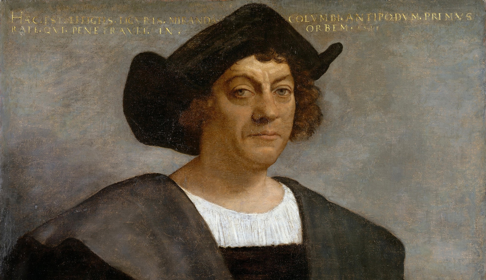

Precolonial Time Period | Colonial Time Period | Market Revolution Period | Antebellum Time Period | Civil War and Reconstruction Time Period |
Westward Expansion Time Period

A Portrait of Christopher Columbus
In the pre-colonial era of early American history, early Americans pursuit for God, glory, and for gold shaped what is now modern day American society. This is mostly due to one person’s pursuit for God, glory, and most importantly for the gold and that person’s name is Christopher Columbus. Christopher Columbus started the pre-colonial era when his plan, approved by the Spanish court, of trying to find a route going to Asia by going west across the Atlantic Ocean was approved. Although he did not find that western route to Asia on his expedition, he did stumble upon America (Danzer, 26-27). If it weren’t for Christopher Columbus and his idea of trying to find a western route to Asia, America would not been found for many many more years, impeding our development and history as a colony and as America. This is because people in Europe will keep using the long eastern route to Asia to trade with Asia and wouldn’t have the idea of traveling westward to find a water route to Asia and stumble upon America. There would be no European superpowers fighting over American land and since all the people that came to America were immigrants from Europe, there would be no America or any colonies in the Americas just the original Native Americans living peacefully in America.
So what were Christopher Columbus’ reasons for making this expedition? According to Danzer (2009), “The search for gold was one of the main reasons for Columbus’s journey… Columbus expressed one of the main reasons he had embarked on his journey. ‘I have been very attentive,’ he wrote, ‘and have tried very hard to find out if there is any gold here” (p. 27). Christopher Columbus also pursuited God for the Spanish and their religion, Christianity. He did this by honoring “his promise to assert Christian domination” as he planted a cross, a sign of Christianity, on every piece of land he landed on in America and said that the people of these lands would easy to convert to Christians (p. 27). Another probable reason for this expedition is for the glory of finding a shorter route from Europe to Asia. If he did find a shorter, less dangerous, and expensive route from Europe to Asia around Africa, he would have the glory and honor from everyone for finding a new and better route from Europe to Asia, in which no man has ever done or thought of before. Since Christopher Columbus pursuited God, glory, and gold on this expedition and found a new land, I can say that as early Americans were in pursuit of glory, God, or gold, it drove them into new lands and changed the world dramatically.
But during the rest of the pre-colonial era of early American history, there really wasn’t any pursuing for God, glory, and gold. There were only a few mentions of God, glory, and gold but not used as pursuing God, glory, and gold. Some examples from the text are:
- “but God was with me in a wonderful manner, carrying me along, and bearing up my spirit, that it did not quite fail” (Rowlandson, 1).
- “We shall find that the God of Israel is among us, when ten of us shall be able to resist a thousand of our enemies; when He shall make us a praise and glory that men shall say of succeeding plantations” (Document D).
- “has been simply to get, as their ultimate end, the Indians’ gold of them, and to stuff themselves with riches in a very few days” (Document A).